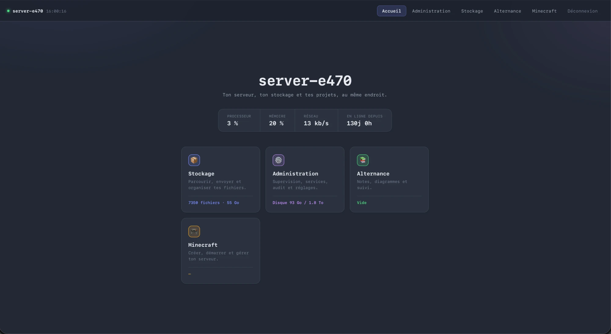
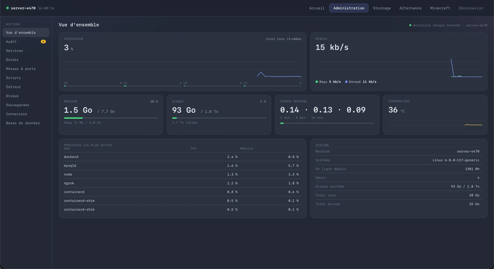
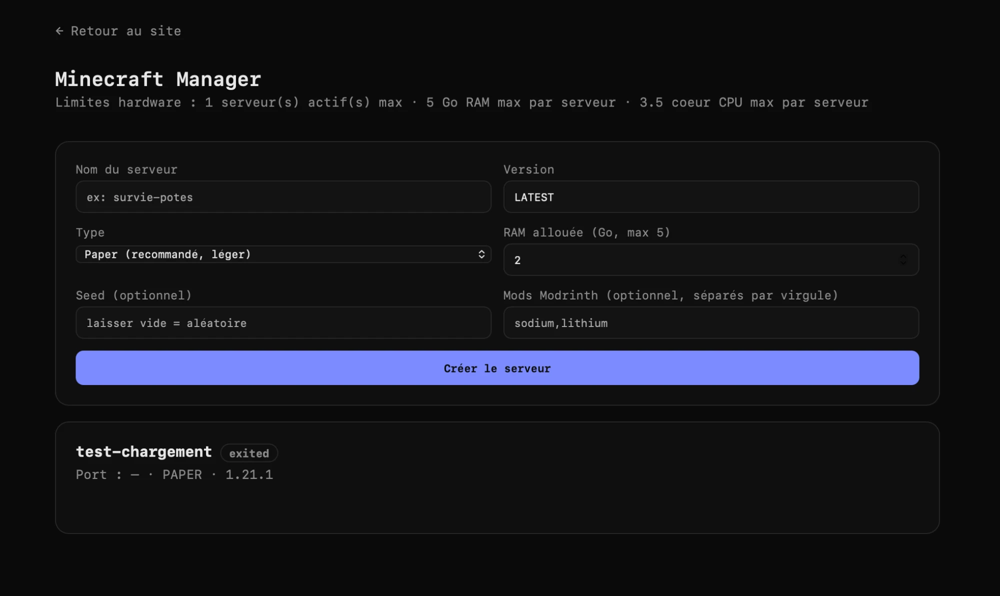

NAS Personnel Dashboard d'administration de fichiers, auto-hébergé
Un NAS personnel complet (~2 To) auto-hébergé sur un vieux ThinkPad, exposé sur internet gratuitement et administré via un dashboard web sur mesure.
🎯 Le projet
Plutôt que de payer un abonnement cloud ou un VPS, j'ai transformé un ancien ThinkPad en serveur personnel pour stocker et administrer mes fichiers (cours du BUT Informatique, projets, documents d'alternance, photos, films...). Le but : avoir un espace de stockage important, accessible de partout, sans dépendre d'un service tiers — et au passage, construire un vrai projet complet d'infrastructure et de développement web.
Pourquoi ce projet ?
- Reprendre le contrôle de mes données plutôt que de payer un stockage cloud limité
- Apprendre à administrer un serveur Linux en conditions réelles (réseau, sécurité, exposition internet)
- Avoir un outil utile au quotidien : centraliser mes fichiers de cours, mes projets d'alternance et mes notes
Matériel
ThinkPad reconverti en serveur — i3, 8 Go de RAM, SSD 2 To — allumé en permanence, connecté en Ethernet à une fibre 2 Gbps.
📸 Aperçu



⚙️ Stack technique
| Composant | Choix | Pourquoi |
|---|---|---|
| OS serveur | Ubuntu Server | Léger, stable, bien documenté |
| Backend | Node.js | Rapide à développer, écosystème riche pour manipuler fichiers et bases de données |
| Frontend | HTML / JS vanilla | Pas de framework : dépendances minimales, contrôle total, chargement instantané |
| Reverse proxy | Caddy | HTTPS automatique (Let's Encrypt), configuration simple |
| Nom de domaine | DuckDNS | Sous-domaine gratuit pour exposer le serveur sans IP fixe |
| Accès distant (admin) | Tailscale | VPN mesh pour administrer le serveur en SSH sans ouvrir de ports |
| Base de données | MySQL | Gestion des métadonnées, comptes, et données de l'app Minecraft Manager |
| Conteneurisation | Docker / Docker Compose | Isolation des services (MySQL, Minecraft Manager, monitoring) |
🧩 Fonctionnalités
Page d'accueil
- Vue d'ensemble du stockage (espace utilisé / disponible)
- Transfert de fichiers Mac ↔ serveur
- Transfert de fichiers entre dossiers du serveur
Page Admin
- Monitoring temps réel du serveur (CPU, RAM, stockage)
- Interface de gestion MySQL complète : schémas, relations, consultation et édition des données directement depuis l'UI
Page Alternance
Espace de prise de notes et diagrammes dédié à l'alternance et aux projets BUT.
Minecraft Manager
- Application Node/Express en service systemd, intégrée au dashboard via Caddy (chemin
/minecraft) - Création, démarrage et arrêt de serveurs à la demande, chacun isolé dans son conteneur Docker
- Sauvegardes automatiques des mondes
- Liste des joueurs connectés en temps réel
Sécurité & accès
- HTTPS automatique via Caddy + Let's Encrypt
- Authentification sur le reverse proxy
- Accès administrateur exclusivement via Tailscale (aucun port SSH exposé publiquement)
🏗️ Architecture
┌─────────────────────┐
Internet ─────────► │ DuckDNS (DNS) │
│ sous-domaine perso │
└──────────┬──────────┘
│ HTTPS
┌──────────▼──────────┐
│ Caddy (reverse │
│ proxy + TLS auto) │
└──────────┬──────────┘
│
┌──────────────────────┼──────────────────────┐
│ │ │
┌───────▼───────┐ ┌──────────▼─────────┐ ┌─────────▼─────────┐
│ Dashboard NAS │ │ Minecraft Manager │ │ MySQL (Docker) │
│ (Node.js + │ │ (Node/Express, │ │ mysql-shared │
│ HTML/JS) │ │ Docker-based, │ │ │
│ │ │ accessible via │ │ │
│ │ │ /minecraft) │ │ │
└───────┬───────┘ └──────────┬─────────┘ └───────────────────┘
│ │
│ ┌─────────▼─────────┐
│ │ Conteneurs Docker │
│ │ (1 par serveur │
│ │ Minecraft, avec │
│ │ backups auto) │
│ └────────────────────┘
│
┌───────▼────────────────────────────┐
│ Stockage local (2 To SSD) │
│ /home/scott/stockage/ │
│ ├── BUT/ │
│ ├── FILMS/ │
│ ├── Informatique/ │
│ ├── PHOTOS_VIDEOS/ │
│ └── SERIES/ │
└─────────────────────────────────────┘
Administration distante : Tailscale (SSH) — jamais de port SSH ouvert publiquement
🔧 Défis techniques rencontrés
Le vrai cœur du projet — les problèmes concrets résolus, pas juste la liste de fonctionnalités.
🗺️ Roadmap
- Historique des tentatives de connexion au serveur (sécurité)
- Authentification renforcée
- Refonte visuelle avec animations (GSAP)
- Import de photos dans les notes de la page Alternance
- Création de bases de données hébergées, utilisables directement depuis VS Code / Antigravity
- Gestion de stacks Docker Compose complètes depuis le dashboard
- Visualisation et déblocage des IP bannies par fail2ban
💡 Ce que ce projet m'a appris
- Administration système Linux en conditions réelles (réseau, sécurité, monitoring)
- Diagnostic de performance réseau (offloading NIC, comparaison de solutions VPN)
- Conception d'une interface d'administration de base de données depuis zéro
- Prise de décision technique basée sur des mesures concrètes plutôt que des suppositions